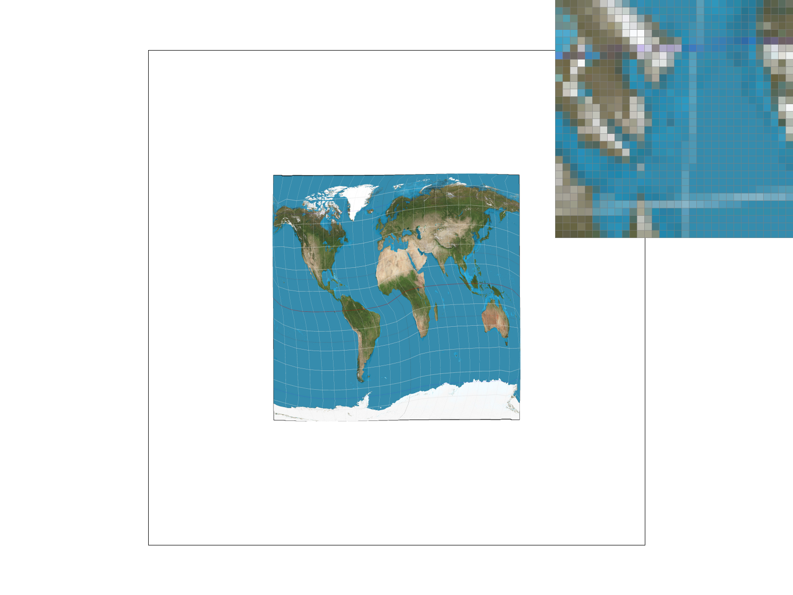

Overview
I implemented various sampling techniques for an SVG rasterizer, such as supersampling, bilinear interpolation, barycentric coordinates, and mipmapping. At the end, I used the rasterizer to render some of my own artwork. Throughout this project, I learned how to take mathematical techniques taught in class and apply them in my code, such as determining whether or not a point was within a given triangle, transforming objects via matrices, and using barycentric coordinates to interpolate colors.
Table of Contents
Section I: Rasterization
Part 1: Rasterizing single-color triangles
In the rasterize_triangle function, I created a bounding box of a triangle
given the coordinates, and went through every pixel in the bounding box. Then,
I used a helper function, called inside_t, to determine whether or not the pixel was inside the
triangle. If it was, I would assign the given color to that particular pixel.
If not, I would move on to the next pixel.
Below is a visual diagram of how I implemented the inside_t helper function. I formed three normal vectors
given the vertices of the triangle, then used the dot product to determine whether the vector pointing to the sample point was in the
triangle or not. Three dot products were performed, one for each normal vector between two vertices of the triangle.
The pixel is inside the triangle if the dot product yields a positive value, or a negative value for all three dot products.
inside_t helper functionSince I am implementing the rasterize_triangle function based upon iterating through every pixel within
the bounding box of a given triangle, my implementation is no worse than one that checks each sample within the bounding box of the triangle.
Extra credit: I optimized my code so that it would only iterate through the left side of the triangle. I made a new variable
called prev_inside, which equals 1 if the previous pixel was inside the triangle, and 0 if it wasn't. We
move onto the next row of pixels if prev_inside == 1 and inside == 0, because we know that the pixels in the
rest of the row isn't in the triangle.
I timed how long it took to render the lion SVG sixteen times for both the unoptimized and optimized version. The mean value for the optimized implementation
was 0.260 seconds, whereas the mean for the unoptimized was 0.289 seconds. Performing a 2-sample t-test with a 0.05 significance level, using the scipy.stats library,
we saw a significant difference between the two means.
Below is a depiction of what the optimized version looks like for a single triangle compared to the unoptimized one:
Part 2: Antialiasing triangles
I modified my sampling algorithm to include two more for loops - one loop
for the column of the super samples, and another for the row. I used the
sample_buffer data structure available to us to assign the
color of the SVG at the particular super-sampled position. Since the sample_buffer
buffer has a size of width*height*sample_rate, the color sampled at the (i, j)th pixel
and the (l, k)th sample is given by sample_buffer[sample_rate * (width*j+i) +
k*samplecount + l].
In the resolve_to_framebuffer() function, I read a batch of colors from
sample_buffer of size sample_rate. I used a helper function to average the
colors in that batch, and put the RGB values inside the rgb_framebuffer_target
data structure provided to us.
Supersampling is useful because it gives off an antialiasing effect. Otherwise, we would see jaggies along the edges of our rendered image, making the final product look awkward, and rough. Here is a side-by-side comparison of sampling once per pixel versus sampling 16 times per pixel:
|
|
|
In terms of modifications, I had to add two more for loops within my rasterize_triangle
function to account for supersampling within each pixel, as described above. In resolve_to_framebuffer,
I needed to write the RGB values for the averaged color within that pixel.
I also modified fill_pixel to account for aliasing points as lines, similarly by sampling within
a particular pixel. This helped to reduce the effect of fading when upsampling.
Additionally, I modified set_sample_rate and set_framebuffer_target
to account for the resizing of the sample_buffer.
To antialias my triangle, I averaged the color of the pixel based upon the supersamples within it.
The process of averaging the colors was done in the helper function, average_colors.
Since each pixel was sampled sample_rate times, I
took out sample_rate number of colors out of the sample_buffer
and outputted a color that was the average of the RGB values in the batch. The average was calculated by
taking the mean of the red, green, and blue channels for each sample in the batch.
In the figures below, we see that as we increase the sample size, we experience less jaggies and more antialiasing. This is because taking more samples allows us to get more information on what proportion of a particular color is within the pixel so we can output the average color within it, and achieve a more, convincing and antialiased look.
|
|
|
Extra credit: I implemented jittered sampling as an alternative solution to aliasing. Although it is faster than supersampling, the antialiasing is not nearly as good. However, it does introduce more randomness than sampling, which can be good for antialiasing on more detailed objects.
|
|
|
|
Part 3: Transforms
I duplicated the original robot file, and made various changes in the translation, rotation, and scaling, and color of the robot's body. I even added a background by duplicating one of the shapes, and adjusting the translation and scaling as necessary. For example with the left arm, the following transformations were performed in this order:
- translate(250 250) (for the entire body)
- translate(-70 -10) (for the arm itself)
- rotate(-70)
- scale(.6 .2)
- rotate(-100) (for the upper arm)
- translate(-50 -30)
- scale(.6 .2)
I switched the color by changing the hexcode.
Extra credit: I made a color picker that can be toggled in the rasterizer by pressing the 'W' key. The color picker zooms in where the mouse is hovered over, and displays the RGB value of that pixel. I took the code for the zoom-in tool, resized it, and change the number of pixels to display to 1. Then, I got the RGB values by using OpenGL's glReadPixels feature.
Section II: Sampling
Part 4: Barycentric coordinates
Barycentric coordinates are a way to linearly interpolate between points on a surface. An example can be shown below, where each vertex is associated with a color. In the middle of the triangle, we have a blend of all three colors - more red if the sample point is closer to the red coordinate, or an equal blend of all three colors if the sample point is in the middle.
I referenced this slide when calculating the RGB values at a particular sample point:
Part 5: "Pixel sampling" for texture mapping
Pixel sampling is sampling a texture at every pixel. When a texture is applied to a shape, we may want to warp the texture. Thus, we must figure out what pixels will be displayed with the warped texture in relation to the shape. Two methods of pixel sampling are nearest pixel sampling and bilinear sampling.
Nearest pixel sampling is simply sampling the closest color value in the texture with the calculated UV coordinates. However, this method is prone to aliasing.
Bilinear sampling is sampling a color found by interpolating between the four closest pixels in a texture map. As seen in the image below, the red dot represents a point being sampled, the black dots represent pixels in the original texture with a defined color. We linearly interpolate based upon these four black dots to obtain a blended hue for the red dot. The resulting image is a smoother, and less jagged picture.
|
|
|
|

|
|
For the sample size of 1, we see that applying bilinear sampling gives a slightly more smoother look-- although dark particles still appear here and there. For the sample size of 16, we see that these harsh changes in color have been relatively smoothed out, and even more so when we perform bilinear sampling.
We will tend to see a larger difference between bilinear and nearest pixel sampling under lower samples. This is because the neighboring pixels for an image of sample size 1 will have a greater variety of color due to aliasing, so it will be more noticeable when applying bilinear sampling. Since the supersampled version has already contributed to most of the smoothing, the neighboring pixels will be closer in color, and bilinear sampling won't improve the image quality as significantly.
Part 6: "Level sampling" with mipmaps for texture mapping
The more warped or scaled a texture is compared to the original, the higher mipmap level we want to use. Higher mipmap levels tend to be more blurred / interpolated so that we can minimize aliasing. In my implementation, I calculated the UV coordinates at pixels (x,y), (x+1, y), and (x, y+1) in our render. Then, I determined du/dx, dv/dx, du/dy, and dv/dy given that dx = 1, dy = 1, and du and dv are the difference in their UV coordinate values at (x,y), (x+1, y) and (x,y), (x, y+1), and scaled it according to the width of the mipmap. I used the following formulae below to get the correct mipmap level, D:
Below are the advantages and disadvantages for using various sampling techniques:
| Pixel Sampling | Level Sampling | Increasing Number of Samples per Pixel | |
|---|---|---|---|
| Advantages | Fast and efficient, doesn't take up too much space | Fast way to antialias something | Can yield a smooth, antialiased look |
| Disadvantages | Prone to aliasing and jaggies | Takes up more memory than other methods (4/3 times), although not by too much. | Very slow, especially with higher samples. The sample_buffer can take up lots of space. |
Below is an example of combining level sampling with pixel sampling at a sample size of 1:
|
|
|
|
|
|

Section III: Art Competition
Part 7: Draw something interesting!
I drew a Pikachu on a drawing app as a guide, and then using the rasterizer, I painstakingly colored it in using polygons by modifying the code inside the SVG file. Then, I rendered it with the rasterizer to make sure the polygons were placed correctly. The cheeks were rendered by duplicating one of the eye shapes and performing translation, rotation, and scale transforms implemented in task 3. I also thought that the image would look better if I added some color jitter, so every few polygons, I modifed the hexcode by one digit. The gradient triangle in the background was rendered via the custom Colortri class implemented in this project in task 4.
The purpose of the wine textures is to make this art piece more humorous (and perhaps, relatable to some).
Progress pictures below:
|
|
|